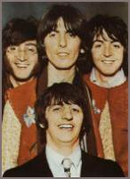

| |

- Aldridge, A. (Ed.) (1969), The Beatles illustrated lyrics. London: Houghton Mifflin Company, 1990 (5th edition).
- Allen, W. D. (1939), Philosophies of music history. A study of general histories of music, 1600-1960. New York: Dover Publications, 1962.
- Ashcraft, M. H. (1989), Human memory and cognition. Illinois, Boston, London: Scott, Foresman and Company, 1989.
- Becker, H. S. (1982), Art worlds. Berkeley, Los Angeles, London: University of California Press, 1984 (Paperback edition).
- Berlyne, D. E. (1960), Conflict, arousal and curiosity. New York: McGraw-Hill, 1960.
- Berlyne, D. E. (1970), "Novelty, complexity and hedonic value." In: Perception and Psychophysics, 1970, 8, 279-286.
- Berlyne, D. E. (1971), Aesthetics and psychobiology. New York: Appleton-Century Crofts, 1971.
- Bertuglia, C. S., Lombardo, S. & Nijkamp, P. (1997), "An interpretative survey of innovative behaviour and diffusion." In: C. S. Bertuglia, S. Lombardo & P. Nijkamp (Eds.), Innovative behaviour in space and time. London: Springer, 1997, 3-16.
- Blacking, J. (1977), "Some problems of theory and method in the study of musical change." In: Yearbook of the International Folk Music Council, 1977, 9, 1-26.
- Broyles, M. (1987), Beethoven. The emergence and evolution of Beethoven's heroic style. New York: Excelsior, 1987.
- Clarke, D. (1989) (Ed.), The Penguin encyclopedia of popular music. Great Britain: Viking, Penguin, 1989.
- Clarke, D. (1995), The rise and fall of popular music. England: Penguin, 1995.
- Coleman, R. (1995), McCartney. Yesterday and today. England: Boxtree, 1995.
- Cott, J. (1968), "The first Rolling Stone interview with John Lennon." In: J. Cott & C. Doudna (1982) (Eds.), The Ballad Of John and Yoko. A Rolling Stone Press Book. London: Michael Joseph, 1982.
- Davis, S. (1989), The craft of lyric writing. London, Sydney, New York: Omnibus Press, 1989.
- Donougho, M. (1987), "Music and history." In: P. Alperson (Ed.) (1989), What is music? An introduction to the philosophy of music. Pennsylvania: State University Press; Haven Publications, 1989, 327-348.
- Dowlding, W. J. (1989), Beatlesongs. New York: Fireside.
- Eerola, T. (1997), The rise and fall of the experimental style of the Beatles. The life span of stylistic periods in music. Jyväskylä, Finland: University of Jyväskylä, 1997 (Unpublished Masters thesis).
- Frenkel, A. & Shefer, D. (1997), "Technological innovation and diffusion models." A review. In: C. S. Bertuglia, S. Lombardo, & P. Nijkamp (Eds.), Innovative behaviour in space and time. London: Springer, 41-63.
- Fujita, T., Hagino, Y., Kubo, H. & Sato, G. (Transcription) (1993), The Beatles complete scores. London, New York, Paris, Sydney, Copenhagen, Madrid: Wise Publications, 1993.
- Garbarini, V. & Cullman, B. & Graustark, B. (1980), Strawberry Fields Forever. John Lennon remembered. New York, Toronto, London: Bantam Book, 1980.
- Gaver, W.W. & Mandler, G. (1987), "Play it again, Sam. On liking music." In: Cognition and Emotion, 1987, 3, 1, 259-282.
- Gjerdingen, R. O. (1988), A classic turn of phrase. Music and the psychology of convention. Philadelphia: University of Pennsylvania Press, 1988.
- Grout, D. J. & Palisca, C. V. (1988), A history of western music. London: J. M. Dent & Sons (4th edition).
- Hargreaves, D. J. (1986), The developmental psychology of music. Great Britain: Cambridge University Press, 1986.
- Hargreaves, D. J. & North, A. C. (1995), "Subjective complexity, familiarity and liking for popular music." In: Psychomusicology, 1995, 14, 77-93.
- Heinonen, Y. & Eerola, T. (1998), "Songwriting, recording, and style change. Problems in the chronology and periodization of the musical style of the Beatles." In: Y. Heinonen, T. Eerola, J. Koskimäki, T. Nurmesjärvi, and J. Richardson (Eds.), Beatlesstudies 1. Songwriting, recording, and style change. Jyväskylä: University of Jyväskylä (Department of Music, Research Reports 19), 1998, 3-32.
- Hyman, I. E. Jr. & Rubin, D. C. (1990), "Memorabeatlia. A naturalistic study of long-term memory." In Memory & Cognition, 1990, 2, 18, 205-214.
- Kaemmer, J. E. (1993), Music in human life. Anthropological perspectives on music. Austin: University of Texas Press, 1993 (Texas Press Sourcebooks in Anthropology, No. 17).
- Koskimäki, J. & Heinonen, Y. (1998), "Variation as the key principle of arrangement in Cry Baby Cry." In: Y. Heinonen, T. Eerola, J. Koskimäki, T. Nurmesjärvi, & J. Richardson (Eds.), Beatlesstudies 1. Songwriting, recording, and style change. Jyväskylä: University of Jyväskylä (Department of Music, Research Reports 19), 1998, 119-145.
- Kuhn, T. S. (1962), The structure of scientific revolutions. London: University of Chicago Press, 1962 (2nd edition).
- La Rue, J. (1970), Guidelines for style analysis. A comprehensive outline of basic principles for the analysis of musical style. New York: W.W. Norton & Company, 1970.
- Leisiö, T. (1995), "Culture, society, tradition and identity. A system-based view on the concepts." In: T. Hautamäki & T. Rautiainen (Eds.), Popular music studies in seven acts. Conference proceedings of the fourth Annual Conference of the Finnish Society for Ethnomusicology (1995). Tampere: Department of Folk Tradition of Tampere University, 1995, 104-118.
- Lewisohn, M. (1988), The Beatles. Recording sessions. The official Abbey Road studio session notes, 1962-1970. New York: Harmony Books, 1988.
- Lewisohn, M. (1990), The Beatles day by day. A chronology, 1962-1989. New York: Harmony Books, 1990.
- MacDonald, I. (1994), Revolution in the head. The Beatles' records and the sixties. London: Fourth Estate, 1994.
- Mandler, J. M. (1984), Stories, scripts, and scenes. Aspects of schema theory. London, New Jersey: Lawrence Eribaum Associates, 1984.
- Marcus, G. (1992), "The Beatles." In: A. DeCurtis & J. Henke with H. George-Warren (Eds.), The Rolling Stone illustrated history of Rock & Roll. The definitive history of the most important artists and their music. London: Plexus Publishing, 1992, 209-222.
- Martin, G. & Hornsby, J. (1979), All you need is ears. New York: St. Martin's Press, 1979.
- Martin, G. & Pearson, W. (1994), Summer of love. The making of Sgt Pepper. Great Britain: MacMillan, Pan Books, 1995 (Paperback edition).
- Martindale, C. (1990), The clockwork muse. The predictability of artistic change. New York: Basic Books, 1990.
- Merriam, A. (1964), The anthropology of music. Illinois: Northwestern University Press, 1980 (Paperback edition).
- Meyer, L. B. (1973), Explaining music. Essays and explorations. Chicago, London: The University of Chicago Press, 1973.
- Meyer, L. B. (1989), Style and music. Theory, history, and style change. Philadelphia: University of Pennsylvania Press, 1989.
- Moore, A. F. (1993), Rock: the primary text. Developing a musicology of rock. England: Open University Press, 1993.
- Narmour, E. (1977), Beyond Schenkerism. The need for alternatives in music analysis. Chicago: Chicago University Press, 1977.
- Nattiez, J.-J. (1990), Music and discourse. Towards a semiology of music. Princeton, New Jersey: Princeton University Press, 1990 (Translation: C. Abbate).
- Nettl, B. (1964), Theory and method in ethnomusicology. Glencoe: Free Press, 1964.
- NGD (1981), The New Grove Dictionary of music and musicians (edited by: S. Sadie). London: Macmillan, 1981.
- Nosofsky, R. M. (1988), "Exemplar-based accounts of relations between classification, recognition and typicality." In: Journal of Experimental Psychology. Learning, Memory, and Cognition, 1988, 14, 700-708.
- Nosofsky, R. M. (1991), "Tests of an exemplar model for relating perceptual classification and recognition memory." In: Journal of Experimental Psychology. Learning, Memory, and Cognition, 1991, 17, 3-27.
- Pascall, R. J. (1981), "Style." In: The New Grove Dictionary of music and musicians (edited by S. Sadie). London: MacMillan, 1981, volume 18.
- Porter, S. C. (1979), The rhythm and harmony in the music of the Beatles. Ann Arbor: UMI Dissertation Services, 1979.
- Ratner, L. G. (1980), Classic music. Expression, form, and style. New York, London: Schirmer Books, MacMillan, 1980.
- Riley, T. (1987), "For the Beatles. Notes on their achievement." In: Popular Music, 1987, 6, 3, 257-272.
- Riley, T. (1988), Tell Me Why. A Beatles commentary. New York: Knopf, 1988.
- Rosch, E. (1975), "Cognitive representations of semantic categories." In: Journal of Experimental Psychology, 1975, 104, 192-233.
- Rosch, E. (1978), "Principles of categorization." In: E. Rosch & B. B. Lloyd (Eds.), Cognition and categorization. New Jersey: Lawrence Eribaum Associates, 1978, 27-48.
- Rosch, E., & Mervis, C.B (1975), "Family resemblances. Studies in the internal structure of categories." In: Cognitive Psychology, 1975, 7, 573-605.
- Salmenhaara, E. (1969), "The Beatles — viihdettä vai taidetta?" [The Beatles entertainment or art?]. In: K. Aho (Ed.), Löytöretkiä musiikkiin. Valittuja kirjoituksia, 1960-1990. Helsinki: Gaudeamus, 1991.
- Serafine, M. L. (1983), "Cognition in music." In: Cognition, 1983, 14, 119-183.
- Smith, E.E., & Medin, D.L. (1981), Categories and concepts. Harvard: Harvard University Press, 1981.
- Solie, R. A. (1980), "The living work. Organicism and musical analysis." In: Nineteenth Century Music. California: The Regents of the University of California, 1980-81, 4, 47-56.
- Stuessy, J. (1994), Rock and Roll. Its history and stylistic development. New Jersey: Prentice-Hall, 1994 (2nd edition).
- Tagg, P. (1982), "Populaarimusiikin affektianalyysi — Raportti musiikin sisältöanalyysin uusista menetelmistä" [Affect analysis of popular music — a report of new methods on content analysis]. In: E. Tarasti (Ed.), Musiikin soivat muodot Musiikintutkimuksen teorioita ja menetelmiä. Jyväskylän yliopiston musiikkitieteen laitoksen julkalsusarja A: tutkielmia ja raportteja 2. Jyväskylä: Jyväskylän yliopiston musiikkitieteen laitos, 1982.
- Treitler, L. (1989), Music and the historical imagination. USA: Harvard University Press, 1990 (Paperback edition).
- Turner, S. (1994), A Hard Day's Write. The stories behind every Beatles' song. England: Little, Brown and Company, 1994.
- Tversky, A. & Kahneman, D. (1973), "A heuristic for judging frequency and probability." In: Cognitive Psychology, 1973, 5, 207-232.
- Tversky, A. (1977), "Features of similarity." In: Psychological Review, 1977, 84, 327-352.
- Wenner, J. (1971a), Lennon remembers. The Rolling Stone interviews by Jann Wenner. England: Penguin Books, 1980 (Reprint).
- Wenner, J. (1971b), "Lennon remembers The Ballad of John and Yoko." In: J. Cott & C. Doudna (1982) (Eds.), The Ballad Of John and Yoko. A Rolling Stone Press Book. London: Michael Joseph, 1982.
- West, A. & Martindale, C. (1996), "Creative trends in the content of Beatles' lyrics." In: Popular Music and Society, 1996, 20, 4, 103-125.
- Whissell, C. (1996), "Traditional and emotional stylometric analysis of the songs of Beatles Paul McCartney and John Lennon." In: Computers and the Humanities, 1996, 30, 3, 257 -265.
- White, T. (1990), Rock lives. Profiles & interviews. England: Omnibus Press, 1991 (Paperback edition).
- Whiteley, S. (1992), The space between the notes. Rock and the counterculture. London: Routledge, 1992.
|